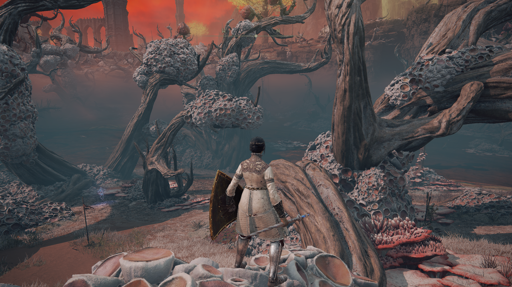
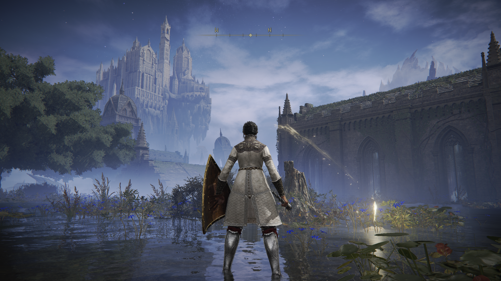
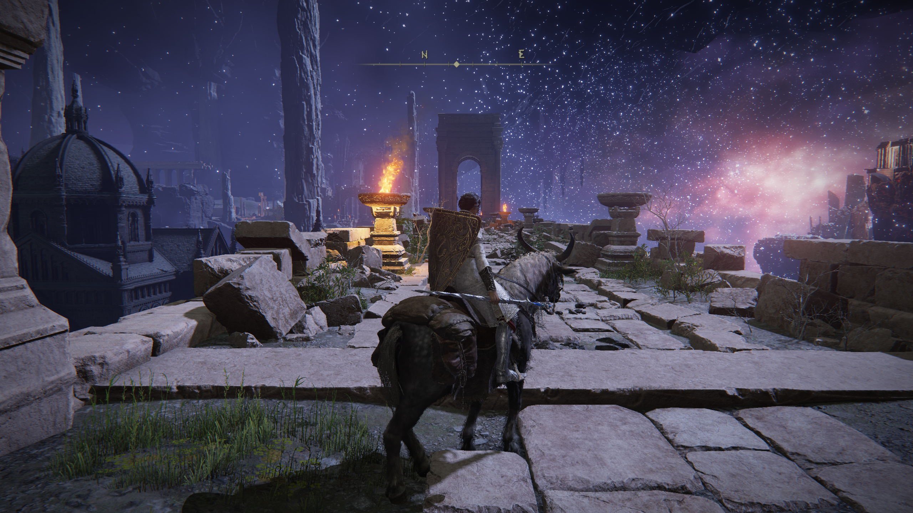
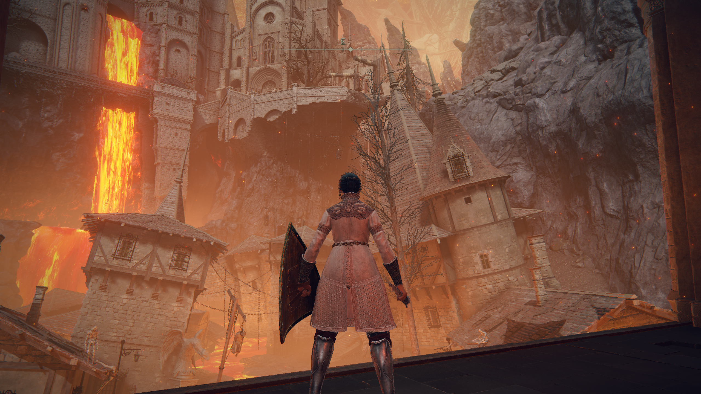

May 14, 2026:
Elden Ring is a game about exploring The Lands Between. I suppose ultimately there is a goal to change the status quo in some way, but the plot is very vague in typical FromSoftware fashion. Most of my enjoyment comes from exploring, looking at the amazing art direction, and repeatedly trying and failing to kill whoever happen to be in my way at the time.
Some screenshots of said amazing art direction:




Another neat thing about Elden Ring is the multiplayer. Elden Ring doesn't include a traditional multiplayer system where multiple people can play together cooperatively (well without mods at least), or some sort of shared world that you can encounter other people in. It instead has a system where you can enter other people's world either as a friend or foe. Most of the time me and my friend* get invaded it ends pretty badly for us, even though it's 2v1. Often we are invaded while separated, when one of us is dead/almost dead, or when in an already very dangerous area. Just due to the nature of invasion they always come as a surprise, yet another disadvantage for the invaded party. However, none of these reasons are nearly as important as our lack of skill. Elden Ring player vs. player (PvP) combat has a very high skill ceiling and generally the people doing the invading have a lot of practice.
All this means that when we finally do manage to kill an invading player it is a notable event. Recently we were invaded by someone with a "ttv" (standing for 'Twitch TV') prefix to their name.
After managing to defeat them we looked up the name and sure enough the person who invaded us was live streaming the fight on Twitch. A clip of said encounter can be found
This encounter is so far the highlight of my Elden Ring experience, and is certainly one of the more comedic things to happen in what is usually a very serious game.
* We are using Elden Ring Seamless Co-op to play together. It's a neat mod that usually works ok with only minor visual bugs.